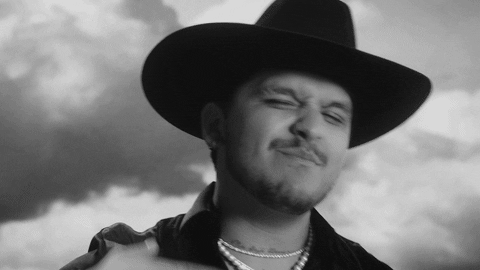

La música esta en todos lados
"La música vibra en tu corazón"
Bachata
La bachata surgió en la marginalidad urbana de los bares y burdeles de Santo Domingo. Durante los años 1960 y principios de los años 1970, desdeñada como música de las clases pobres.Está considerado como un derivado del bolero rítmico.
Leer masPop en Ingles
La música pop es un estilo musical derivado de la música popular. Su nombre, pop, procede del inglés, que es un acortamiento del término popular, que en español traduce 'popular'. La música pop se origina en Inglaterra, a mediados del siglo XX.
Leer masReggaetón
El término reguetón es la forma adaptada al español a partir del vocablo reggaetón; este, viene del acortamiento entre las palabras reggae y maratón. Fue acuñado por Daddy Yankee y Dj Playero en Puerto Rico en 1992.Tuvo un primer brote en Panamá.
Leer masBanda
La Banda Sinaloense o Tambora Sinaloense es un tipo de ensamble musical, de género musical tradicional y popular, el cual es culturalmente establecido a principios de los años veinte en el Estado de Sinaloa, región norte occidente de México.
Leer mas-

- 